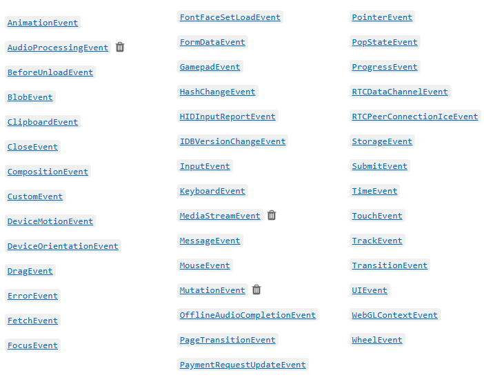
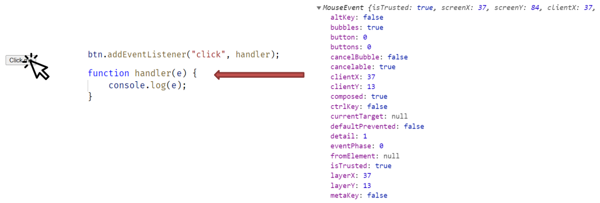

Тема 16. Події (Events)
- Вступ до подій
- Основні події
- Встановлення обробників події
- Ключове слово this в обробнику події
- Об'єкт події
- Події DOMContentLoaded та load
- Події миші
- Події клавіатури
- Фази проходу події
- Реєстрація обробника події на різних фазах
- Скасування поширення події та скасування дії за умовчанням
Подія
Подія – це сигнал, який повідомляє про настання певного стану деякого об'єкта.
Наприклад:
- кнопка натиснута
- курсор увійшов до області елемента
- на клавіатурі натиснута клавіша
Обробник події – функція, яка запускається у разі виникнення події.
Основні події
- click
натискання лівої клавіші миші
- contextmenu
натискання правої клавіші миші
- keydown
клавіша на клавіатурі затиснута
- keyup
клавішу на клавіатурі відпущено
- submit
користувач надіслав форму (натиснув
кнопку submit для form)
- mouseout
курсор вийшов за межі елемента
- mouseover
курсор увійшов у область елемента
- mousedown
затиснута клавіша миші
- mouseup
відпущена клавіша миші
- mousemove
курсор переміщається елементом
Перелік подій
https://developer.mozilla.org/ru/docs/Web/Events
Встановлення обробників

Встановлення обробників
- Обробник може бути встановлений за допомогою атрибута HTML розмітки. Це один із
способів встановлення обробників, яких слід уникати, оскільки у такому випадку
відбувається змішування логіки інтерфейсу (HTML) та бізнес-логіки (JavaScript). Слід завжди
прагнути такої структури коду, щоб розмітка відокремлювалася від сценаріїв. Такий код
легше супроводжувати та розширювати.
- Щоб встановити обробник події через JavaScript код, необхідно визначити функцію та
додати її як значення для властивості з ім'ям події, яку необхідно обробити. Даний підхід має кілька
недоліків, один з них – на одну подію одного елемента можна
додати лише один обробник. При додаванні другого оброблювача, перший обробник
видаляється.
- Найоптимальнішим способом встановлення обробника події є метод addEventListener
Встановлення обробників
addEventListener (event, handler, options)
- event – ім'я події, без приставки on (click, mousedown тощо)
- handler – функція, яка встановлюється як обробник.
- options – додаткові параметри
У такий спосіб можна додати кілька обробників на одну подію того самого елемента
сторінки.
Щоб видалити обробник, який був встановлений через addEventListener, потрібно
використовувати метод removeEventListener
Встановлення обробників
Метод removeEventListener у JavaScript використовується для видалення обробника подій, який був раніше доданий
за допомогою addEventListener. Це важливо з кількох причин:
- Якщо обробник події залишається привʼязаним до елемента, який вже не використовується або видалений з DOM,
це може призвести до витоку памʼяті:
- Оскільки браузер не може "прибрати" цей елемент зі своєї памʼяті, поки існує посилання через
обробник;
- Особливо актуально для SPA (single-page applications), де сторінка не перезавантажується, і
"сміття" накопичується
- Уникнення повторного спрацювання одного й того ж обробника. Якщо ви декілька разів викликаєте
addEventListener, не видаляючи старі обробники, то один і той самий обробник може спрацьовувати кілька разів
— це може викликати баги або неочікувану поведінку.
Встановлення обробників
Поради по роботі з removeEventListener
- Якщо при додаванні обробника події було використано додаткові опції, то при видаленні обробника необхідно
вказати ці ж опції, щоб вказати, який саме обробник потрібно видалити.
- Використання removeEventListener() є важливим для оптимізації продуктивності вебзастосунків. Видалення
непотрібних обробників подій допомагає уникнути витоків пам'яті, особливо в односторінкових додатках, де
елементи DOM можуть динамічно додаватися та видалятися. Тому регулярно переглядайте свій код на предмет
неактивних слухачів подій та видаляйте їх.
- Коли ви використовуєте removeEventListener() для видалення обробника події з елемента, переконайтеся, що цей
елемент все ще існує в DOM. Якщо елемент було видалено, спроби видалити обробник події з нього будуть
марними. Також, якщо ви працюєте з динамічно генерованими елементами, забезпечте наявність механізму для
відстеження та видалення обробників подій перед видаленням цих елементів з DOM.
Ключове слово this в обробнику події
Якщо в обробнику використовувати ключове слово this, можна отримати доступ до
об'єкта, який ініціював подію.
Наприклад, якщо в обробнику кнопки на подію click
використовувати this, можна отримати доступ до самої кнопки, по якій виконали клік, а
також отримати значення властивостей цієї кнопки.
Це зручно використовувати тоді, коли
той самий обробник використовується для різних елементів на сторінці.
Підсумки
Подія – основний спосіб реагувати на дії користувача та виконувати код. Для обробки події потрібно
встановити обробник події у вигляді JavaScript функції.
Обробник можна встановити через:
- атрибут on+назва_події в розмітці
- властивості on+ім'я_події у JavaScript коді
- метод addEventListener
Метод addEventListener дозволяє встановити кілька обробників на одну подію та підтримує
маршрутизацію подій.
Приклади в директорії js/16-events/examples/events-1
Об'єкт події Event
Подія, що виникла в DOM, є об'єктом, якому можна отримати доступ через параметр методу
обробника.
Event - інтерфейс, який представляє подію, що виникла в DOM. (Під інтерфейсом мається на увазі
набір
властивостей та методів).

https://developer.mozilla.org/en-US/docs/Web/API/Event
Об'єкт події Event
HTML сторінка має три основні події.
- DOMContentLoaded – браузер завантажив розмітку та побудував DOM дерево, але
зовнішні ресурси, наприклад, картинки, можуть завантажуватися. Ця подія спрацьовує на
об'єкті document. Використовується щоб виконати JavaScript-код, як тільки доступна структура DOM, але ще до
повного завантаження всіх ресурсів (що швидше за load).
- load – HTML та зовнішні ресурси завантажені. Ця подія спрацьовує на об'єкті window. Використовується
щоб виконати код
після повного завантаження всього вмісту, наприклад, обробка зображень, ініціалізація слайдерів тощо.
- beforeunload/unload - Перед тим як користувач залишає сторінку (перезавантажує, закриває, переходить
кудись).
Об'єкт події Event
Об'єкт події – об'єкт, який створює браузер у момент виникнення події. Цей об'єкт
передається як перший аргумент у функцію «обробник події» і може бути використаний
для отримання додаткової інформації про подію. Наприклад, положення курсора,
затискання клавіші на клавіатурі чи миші.

Об'єкт події Event
Під час роботи з подіями миші можна виділити дві категорії подій – прості та комплексні.
Комплексні події будуються з урахуванням простих подій.
Прості події:
- mousedown – кнопка миші натиснута
- mouseup – кнопка миші відпущена
- mousemove – рух миші над елементом
- mouseover – курсор з'явився над елементом
- mouseout – курсор йде з елемента
- contextmenu - затиснута права клавіша миші.
Комплексні події:
- click – mousedown та mouseup над цим же елементом
- dblclick – подвійний клік на елементі
Події миші
Під час обробки події, пов'язаної з кліком, можна дізнатися клавішу миші, яка
використовувалася для кліка. Для цього необхідно отримати значення властивості which
об'єкта події, яке передавалося в метод обробника події. Значення 1 – затиснута ліва
клавіша, 2 – середня клавіша (колесо), 3 – права клавіша миші.
Також об'єкт події містить властивості, які визначають, які клавіші були затиснуті на
клавіатурі під час події – shiftKey, altKey, ctrlKey, metaKey (Cmd для Mac).
Для отримання координат курсора використовуються властивості clientX, clientY, pageX та
pageY.
Client – координати щодо вікна.
Page – координати щодо документа (документ може скролитись і частина документа
перебувати за межами видимої частини вікна).
Події клавіатури
Якщо завдання реагувати на взаємодію користувача з клавіатурою – обробляти
натискання на стрілочки, комбінації клавіш або певні клавіші, використовуються події
keydown та keyup
Під час обробки події в об'єкті події є дві властивості, пов'язані з клавішею code і key.
Key – символ клавіші (змінюється відповідно до мови користувача).
br
Code – фізичний код кнопки
Приклади в директорії js/16-events/examples/events-2
Контрольні питання
- Що така подія?
- Назвіть події, пов'язані з клавіатурою.
- Назвіть події, пов'язані з рухом курсора.
- Як встановити обробник через розмітку?
- Які способи встановлення обробників через JavaScript код ви знаєте?
- У чому перевага використання addEventListener перед іншими варіантами?
- У чому різниця між подіями load та DOMContentLoaded?
- Як можна попередити користувача про те, що він має намір залишити сторінку?
- Як дізнатися, яка клавіша миші була затиснута під час обробки події click?
- Як дізнатися, чи кнопка shift затиснута під час обробки події click?
- У чому різниця між властивостями clientY та pageY?
- Як отримати інформацію про те, яка клавіша на клавіатурі була затиснута?